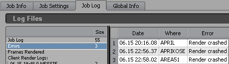

There are many possible issues if your job does not render or produces wrong outputs.
These are some hints where you can look for errors.
1. Open the job log page. You can open it via rrWebsite or rrControl. Select the job and click on the tab "Logs" 2. Click on "Errors" on the left side. This is a list of all errors that happend at the job. |
 |
Typical error messages:
Message |
Description |
What to do? |
Crashed |
Reasons for this issue:
|
You have to take a look into the render log files to find the origin of the crash. If the renderer executable crashed, then it will be printed in the log file after the main render phase. The information is inside a block of ++++ and starts with "++ Render Executable done ++" |
Frozen |
Reasons for this issue:
|
Windows: If the renderer opened a dialog box, then it is shown at the end of the render log. |
Output Directrory not found |
Reasons for this issue:
|
To test it, please login at the client (The client with this error). Start rrControl (or rrWebsite). Select the job and open the "Job Info" tab. Click on the output file. It will open the folder where the rendering should be saved into. Note: If you are running the client as service, then it can be that you have to login with the User for rrService. The one you have used in rrWorkstationinstaller to install the service. You probably have to change the output path in your scene file to a network path that can be found and accessed by all clients. rrServer: If the rrServer can not reach the output directory, then the rrServer logs this error for the job. The rrServer checks again in 120 seconds or if a client returns the job (what happens earlier). If this happens 3 times, the job is disabled and will not be send anymore. |
Job send 3 times more than frames exist No frames found |
The server has send the job multiple times to clients. But there is still nothing or not all frames rendered or the server does not find the frames (if there are files rendered). Reasons for this issue:
|
|
This part shows some information about the client the render range the executable used to render |
++++++++++++++++++++++++ Log Start +++++++++++++++ ... ... ... |
Some Environment variables with all kind of information about the job |
++++++++++++ Environment Variables Job: +++++++++++++++++ ... ... ... ++++++++++++ Environment Variables Client: +++++++++++++++ ... ... ... ++++++++++++++++++++++++++++++++++++++++++++++ |
Executes the setenv file |
For Example for Softimage: call "\RRender6\render_apps\_setenv\win\Softimage.bat" ... ... ... |
The output of the actual render application. |
++++++++++++++++++++++ START +++++++++++++++++++++++ C:\Program Files\Autodesk\Softimage\Xsibatch scene start end params... ... ... ... |
If an application crashed or has to halt, then it returns an error code. It is not possible to convert these error codes into error messages. If the application would have been able to handle the error then it would have printed an error message. But it was unable to catch this fatal error and crashed. Note: It happens that the application rendered the frames successfully, but crashed afterward. For example while unloading a plugin or releasing memory. |
++++++++++++++++++++++++++++++++++++++++++++++++++++++ ++++++++++++++++++++++ Render Executable done ++++++++++++++++ ++++++++++++++ Royal Render checks the return code of the executable +++++ ++++++++++++++++++++++ 05.26 14:13.53 +++++++++++++++++++++++ ++++ Executable returned -1073741819 (0x ffffffffc0000005) as exit code for frame 65. ++++ Render crashed +++++++++++++++++++++++++++++++++++++++++++++++++ |
If the client has collected some information during render, then it will append the information at the end of the log file. |
*********** CLIENT REPORTS DURING THIS RENDER ************** |
This part is a bit more work, but sometimes you have scene that simply do not wont to render. Or you get noise, or ....
You can change thousands of settings in a full scene with hundrets of objects, shaders, lights, textures, plugins.
I personally see it every time, a lot of artists are trying to find an issue inside a production scene and change this value, rendering, then that, rendering,...
But do you have time to change everything? Often the reason can be one single object. So how long until you find this needle in a haystack?
So the idea of the scene breakdown is to reduce the possibilites. Exclude possible reasons very fast.
The workflow is to change something (save the scene with a meaningful name what you have changed) and submit it to the farm.
While the scene is on the farm, you can probably do the next test scene and also submit it.
You could end up with 10 scenes at the same time rendering on the farm to see which one works.
The following list is a collection of steps you can try. Depending on the type of render issue you get.
Make this test render fast! |
Set the Antialiasing to a low setting (MRay: -2 -2) or reduce the image resolution. Reduce area light samples. Reduce the time range. |
Make a small test scene first. |
Try to delete all gemoetry and just place a cube in it. If it renders, you know it is something in the scene. If not, try a brand new scene with a cube only. |
Make the test render fast/ Is it one of these render features? |
Disable displacement in your render settings. Disable shadows. Disable volume rendering. Remove all textures or replace all texture connections with a single 256x256 pixel image. |
Is it a shader? |
Remove all shaders and textures from the scene. Apply a lambert only. |
Is it the geometry? Is it a light? Is the scene itself corrupt?/Is it a render setting? |
Remove all Objects and place an animated sphere/cube into the scene. Same for the lights, remove all lights and create one directional light only. With only one light and one object in the scene you have not much left to test. Perhaps the scene is corrupt? Try to create a new scene and merge your old into that one. |
Is it one of my objects? Which one? |
Remove half of your objects. Save it as "_halfA". Open the orginal scene, remove the other half and save it as "_halfB". If one of these scenes render, it could be one of the objects left. Repeat the half-splitting ("_halfAA"+"_halfAB", "_halfABA"+"_halfABB"...) until you have the object. Note: it could be the geometry, the shader or a texture applied to this object. |
You know it is one of the shader networks. So test single features of the shading network. |
Create multiple scenes with only single parts of the shading network. Again, create multiple test scenes you can send to the farm at the same time. You have two ways. Either remove parts of the shading network one by one and send them to render: no displacement +no bump mapping +no reflection ... OR exclusively test single parts of the shading network: - Main shader only (no textures) - Main shader + Displacement - Main shader + Diffuse texture - Main shader + Reflection - Main shader + Ambient Occlusion - Main shader + Bump mapping ... |
You have a scene that does render really slow. And you think it should not take that long. (e.g. local render 3min, farm render 20min)
These are some known issues and tips for debugging:
External files - network traffic |
It happens often that your fileserver is able to handle artists working on a scene with many file inputs. But once the scene is send to 10 (30?) clients at a time the network is slowed down. Try to send the scene to 1 client only. Disable (most of) the other clients that they do not get any job. |
Simulation cache files - read only |
If you use simulations in your scene, please check that the simulation is not re-simulated. Some simulators allow to set an option to read cache files only, no re-simulation. If you are not sure if a setting has this effect, then close the scene, rename the cache files folder and re-open the scene. If the scene does not simulate, you do not see anything of your simulation. If you think that the render time should be about the same for all frames, but according to the logs the total frame time increases the higher the frame number send to a client, then this is an indication that the scene is re-simulated. |
Simulation cache files - relative paths |
If you use relative paths to your cache files (e.g. inside the Maya project folder), then you have to disable "local scene cache" for the job. |
Reduce/Remove everything that takes render time |
If you remove everything beside the issue you will reduce the chance that you get a false assumption about the issue. Reduce render resolution and antialiasing. Breakdown/Slim the scene. See "Scene breakdown" how to keep the object responsible for the render time. |
Render log time/CPU informations |
RR and renderer have a few helpful prints in the render log. For example a default RR+ Maya + Vray render: ++ Log Start +++ 10.01 18:15.57 [2013/Oct/1|18:16:03] V-Ray: V-Ray core version is 2.00.01 File read in 4 seconds. Result: C:/RR_localdata/cachedscenes/0257_0970_lighting_v01_004.mb V-Ray: Starting render [2013/Oct/1|18:16:35] [2013/Oct/1|19:16:54] V-Ray: Rendering. [2013/Oct/1|19:16:54] V-Ray: Pre-render export. [2013/Oct/1|19:16:54] V-Ray: Pre-render export [2013/Oct/1|20:12:35] V-Ray: Pre-render export done. [2013/Oct/1|20:12:35] V-Ray: Rendering frames. +++ Render Executable done ++ ++ 10.01. 20:14.34 +++ Max core usage of job: 24.00cores (of 24 cores) Startup to first frame: 59.28 m.s (render app start + scene load + 1st frame preprocessing) Analysis: Max CPU usage of the job is 24 of 24, so there is no thread limitation. Startup to first frame is 59min. So it took a long time until the frame was started. If I compare it to the VRay pre-render export times, then I can see that there is an hour difference. Which confirms the long pre-processing time. |
Add time prints |
Add as many time prints as possible. For example as pre/post render scripts. If you use simulations, add a pre and post-frame script to all sim objects. Add objects to your scene with a expression/script driven setting (e.g. position noise script) . Then you know when the scene/frame is being prepared after scene load. |
Increase renderer verbose |
Increase the renderer verbose output. (Note: If you increase it to much, the log itselfs slows down the rendering. E.g. one log line takes 0.01s. Not much, but if you print 1000 log lines it takes 10s.) |
Local workstation/artist settings/caches. |
Sometimes a scene is fast for the artist because of local caches. So it could be different on a different machine or even with a different user. Please login with the same user that you use for rendering (see render log: ++ Log Start +++ Environment user is renderadmin) on a render farm machine. Open the scene and render the first frame. (Should not take long as you have decreased the AA and the resolution). Then render the last frame of the scene. |
How to send debug jobs to the farm |
According to the "External files - network traffic" you should not send one scene to many clients at the same time. If you get a fast render with a few clients and a slow render with many clients (same frames), then your network reached a limit. (Hint: Read rrInstallation section about Jumbo Frames) You can set sequence divide min/max to:
|